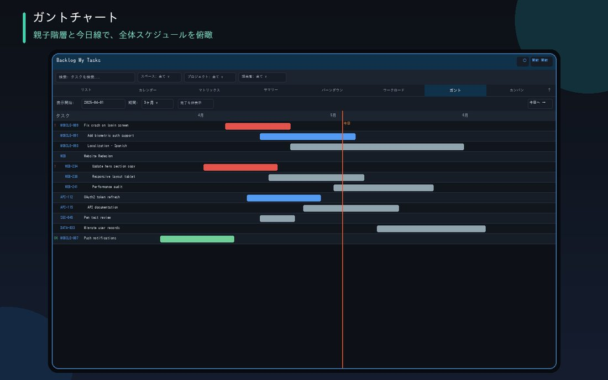

將所選專案的所有任務（所有負責人）整合在一張甘特圖中。介面與個人甘特圖相同，甚至能直接完成日程調整。

將所選專案的所有任務（所有負責人）整合在一張甘特圖中
父子樹狀結構、今日線、進度線（閃電線）、拖曳長條端點變更日期（相依任務的自動位移功能亦通用）
以期間、負責人、僅自己、狀態、關鍵字搜尋來縮小目標範圍
只要在資料管理中已取得過，即可不呼叫API直接繪製畫面
某人的延遲會如何影響其他任務，也能在甘特圖上當場掌握、完成調整。